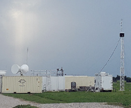
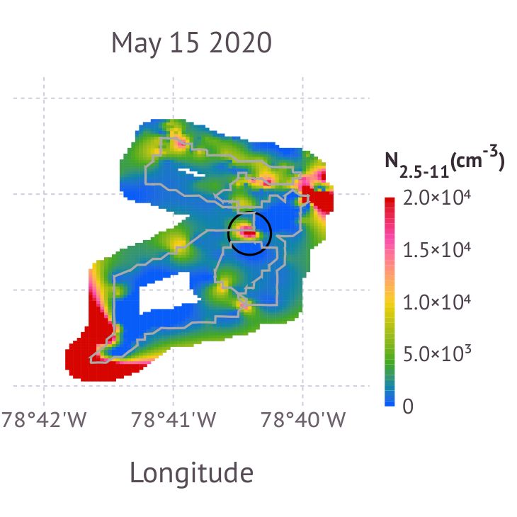
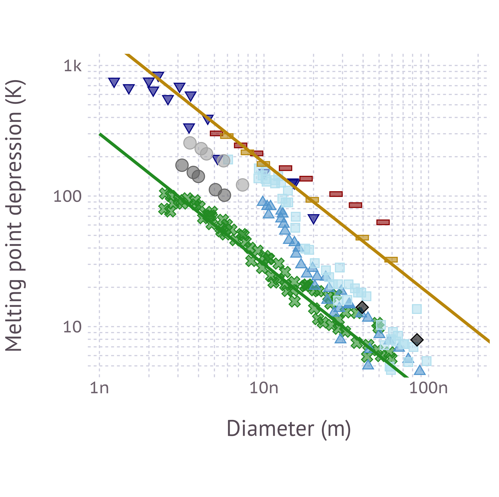
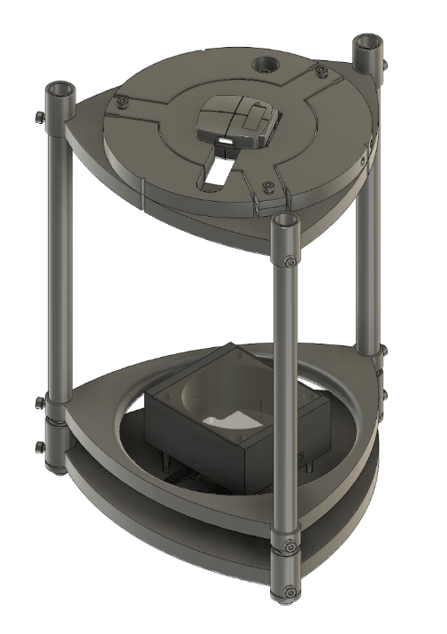
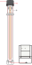
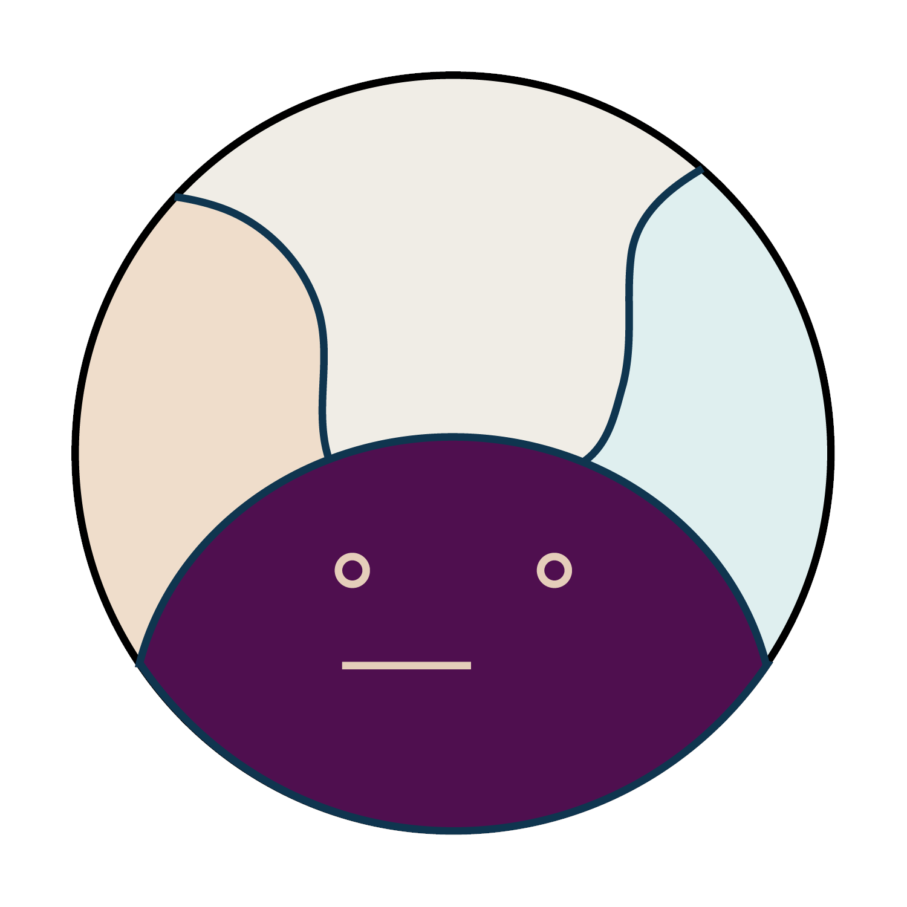

Field Campaign: EPCAPE
Flight Campaign: CAESAR

Field Campaign: TRACER

Mobile Emission Mapping

Lab Studies: Aerosol Viscosity

CIF: Ice Nucleation Cold-Stage
Outreach
Educational Notebooks
RegularizationTools.jl

DifferentialMobilityAnalyzers.jl

Hygroscopicity Parameter
CC BY-SA 4.0 Markus Petters.